Documentation of a master's seminar to build a low-cost sensor box to monitor basic
environmental variables in forest environments.
Introduction
The SensorBox was developed during a master's seminar at the University of Marburg. The idea of the SensorBox was to create a tool which enables the collection of some basic environmental variables along a vertical path in forest
structures. The box is part of a broader research effort to effectively monitor biotic and abiotic factors to draw benefits for biodiversity conversation and the sustainable management of ecosystem services. The innovation of the SensorBox
lies in its cheap and reconstructable design as well as its ability to collect data in a 3D-space through the use of cable cars attached to individual trees in a forest. In the video below you can get the basic idea of the SensorBox moving
upwards and collecting data at specified height levels.
This webpage reports on the materials used and the way to assembly the SensorBoxes to get a fully deployable sensor unit to measure variables such as temperature, humidity, light as well as visual and audio information on the environment.
The seminar is closely associated to the LOEWE research project Natur 4.0 which aims at innovative data acquisition and processing techniques to developed a methodology to a spatial
and temporal comprehensive monitoring of landscapes and ecosystems. The basic tool-kit on the side of data acquisition consists of a spatially-dispersed network of environmental sensors, unmanned aerial vehicles (UAV), automatic rovers as
well as low-invasive sensors placed on animals and humans moving through the landscape to be monitored. A very central role comes to the SensorBoxes, which allow for a comprehensive, local-scale and continuous measurement of environmental
variables.
Sensors
Here you will find some information on the different sensors we used in the implementation of the SensorBox. Of course, other sensors for measuring the same or even other environmental variables could be used as well. The listed sensors
were chosen due to their low prices but also because they measure the variables of interest to us accurately. For the microphone we tested two different versions, one significantly more expensive than the other one. If the quality of the
records of the cheaper microphone would prove well enough, costs could be reduced.
Camera
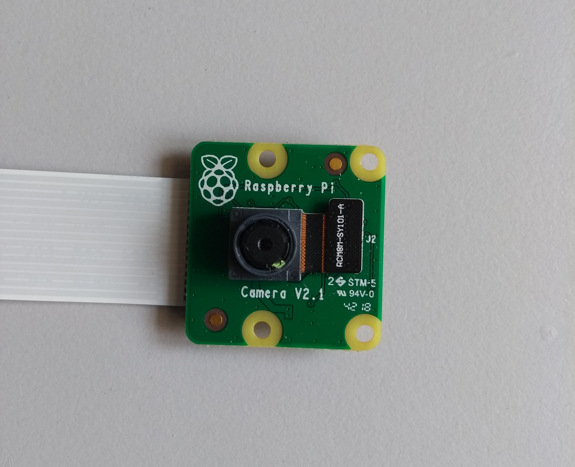
Product name:
Raspberry Pi Camera Module v2.1
Technical product information:
Sensor: Sony IMX219 8 Megapixel sensor
Supported formats: 1080p@30Hz, 720p@60Hz and 640x480p@60/90Hz
Depending on your local retailer available for about 26 €
Sensor usage:
The camera is used to monitor the canopy from below the crown surface. The collected data can be used to calculate the greenness-index to compare it with UAV generated aerial RGB-images. Further it can be used to monitor vegetation growth
and animal wildlife detection.
The microphone is used to record the singing of birds. This data can be used by a machine learning algorithm to identify bird species. Bird species are an important indicator for biodiversity in forest ecosystems.
In the first stage of development two different models of microphones are tested to evaluate if a cheaper microphone is also suitable for bird species identification.
The microphone is used to record the singing of birds. This data can be used by a machine learning algorithm to identify bird species. Bird species are an important indicator for biodiversity in forest ecosystems.
In the first stage of development two different models of microphones are tested to evaluate if a cheaper microphone is also suitable for bird species identification.
The temperature and humidity sensor is used to measure micro-climatic data. The lift-system allows to collect the data in a vertical range for advanced climatic modeling below the crown surface.
Depending on your local retailer available for about 6 €
Sensor usage:
The digital light sensor gathers information about the light intensity in the visible an near infrared spectrum. The data can be used to model vegetation density and light distribution at different height-levels. On the SensorBox it is
faced upwards and takes measurements at different heights. The idea is to use this data to model some forest structural parameters to achiveve a spatially comprehensive dataset in conjunction with aerial images collected by UAVs.
SensorKit X40
Available for approximately 3€ depending on your local retailer.
Sensor usage:
The hall sensors are responsible to control the movement of the lift system. By attaching magnets at the upper and lower end of the lift we can build a magnetic field which is measured by the hall sensors. The engine powering the lift can be stopped when the
SensorBox reaches the upper or lower limit. Similarily, the sensor box can be stopped at different heights to take measurments.
Eckstein GmbH
Available for approximately 4€
depending on your local reatailer.
Sensor usage:
The real-time clocke ensures that the data collected by different SensorBoxes are saved to disk with the correct time-stamp associated with each measurment. A battery is attached to the clock which ensures that even in the case of power shortages or other system breakdowns the right time-stamp is available when the system reboots.
Hardware
Raspberry Pi
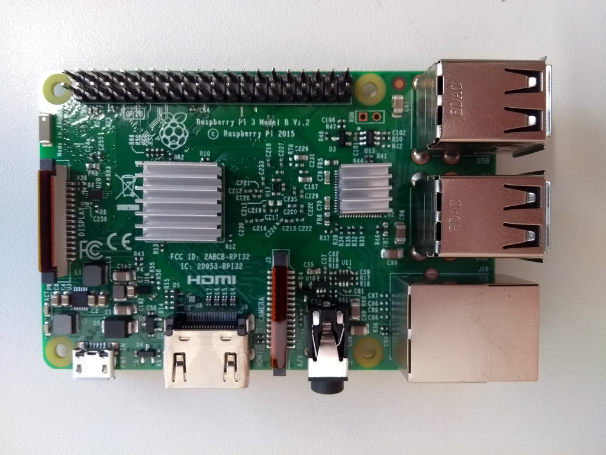
Product name:
Raspberry Pi 3 Model B version 1.2
Technical product information:
Quad Core 1.2GHz Broadcom BCM2837 64bit CPU
1GB RAM
BCM43438 wireless LAN and Bluetooth Low Energy (BLE) on board
40-pin extended GPIO
4 USB 2 ports
4 Pole stereo output and composite video port
CSI camera port for connecting a Raspberry Pi camera
Micro SD port for loading your operating system and storing data
Upgraded switched Micro USB power source up to 2.5A
available for approximately 30€ depending on your local retailer
Usage:
The Raspberry Pi microcontroller is the heart piece of the SensorBox. Here, the software for the different sensors is stored and executed. The data collected is temporary stored here as well, before it is send to a base station.
Available for approximately 50€ depending on your local retailer
Usage:
The powerbank is the source of energy for the microcontroller and the sensors. The microcontroller, though in sleep-mode between the measurements, needs a steady power supply while the sensors are only powered during their respective measurements. Especially in remote areas, power supply is a critical issue for selfcontained sensor units.
Available for approximately 1.3€ depending on your local retailer
Usage:
The wireless charger pad is used to re-power the powerbank at the ground stations during night, when no mearuments are taken and the SensorBox rests at the ground. The energy is supposed to be provided either by solar panels recharging simple car batteries or the car batteries will need manual changes. However, the use of the a wireless charging technology allows the SensorBox to recharge autonomously without further need of human action.
Depending on your local retailer available for about 25 €
Usage:
The contaiment box contains the microcontroller and all environmental sensors are attached to it. The box need to be waterproof to secure the electronics inside. It also should habe a long living cycle, because we do not want the structural integrity of our SensorBox to deteriorate very quickly. At the same time, it was important that only non-harmful materials to the environment are used.
Construction materials
Here you will find the step-by-step information on the assembly of the sensor box. Current versions of the designs for required 3D-printed parts can be found in a GitHub repository of Natur4.0.
Preparing the containment box
Containment box
Hinge set
Cable-tie sockets
Raspberry Pi model 3
Heat sinks
Breadboard
Powerbank with an USB power-cable
Wireless charging pad
6 rolls
3D-printed mounting plate
100 cm of rope (approx. 2mm width)
30 cm rope (approx. 2mm width)
4 times 4x12mm screws
4 times 2.9x13mm screws
6 times 4x16mm countersunk-head screws
6 times 4mm safety nut
6 times 4mm washers
Black and red jumper cables (50cm)
Attaching hinges and preparing cable and roll entries
First, we drilled some holes in the containment box to attach the hinges between the box and lid. We used a 5mm drill bit which fits well into the indentations at the side of the box. We used a 6mm drill bit to slightly expand the holes. Then, we attached the hinges with the supplied screws from the hinge set. After attaching the hinges, we prepared the topside of the box by drilling holes for the sensor tower with entries for the cables of the sensors, the camera and the microphone. To correctly place the entry holes for the cables we prepared a printable template. Then we drilled holes which are used to attach the rolls to the containment box using another template. Here, we used a 3,5 mm drill bit which fits very well with the rolls we purchased.
We drilled another two holes for the suspension rope which ensures the stability of the box while being mounted in the cable car. Here, we used a 4mm drill and another printable template. We inserted the rope of 100cm in length in both holes put a knot on the inner ends and sealed it by cautiously using a lighter to melt some of the plastic. We made sure that the length of the rope outside of the box is at least 80 cm. On the inside, we attached two cable tie sockets and connected them with the 30 cm rope.
Last we used the six 4x16mm countersunk-head screws to attach the rolls to the box. We used the washers to seal off the entry holes and the safety nuts to ensure the firmness of the rolls. Additionally, we put instant glue under the washers and safety nuts and then gave the screws and nuts one last thrust to ensure the box is waterproof.
Installing the Raspberry Pi and the power supply
We used four 4x12 mm screws to attach the 3D-printed microcontroller mounting plate cautiously to the containment box. The screws must not pierce through the back of the box. Before attaching the microcontroller to the socket we pasted the heat sinks on the processor units of the Raspberry Pi. Then we put the it on the mounting plate with the USB-ports pointing to the right side and fixated it with four 2,9x13mm screws. From a simple breadboard we took only one energy rack and placed it on the bottom side of the mounting plate. Then we put the powerbank on the inner side of the containment box right where the mounting plate shows a free space of the size of the powerbank. We did not connect the USB-power-cable to the Raspberry Pi just yet, since we first attached all the missing sensors.
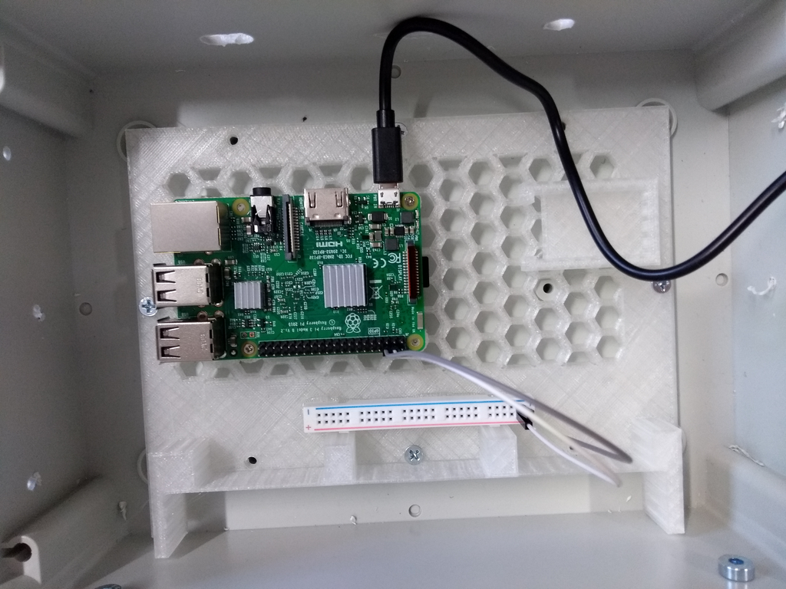
Attaching the sensors
The Light-Microclimate-Sensor-Tower (LMST)
Temperature and humidity sensor
Lux-sensor
Cover glass pane 25x25mm
3D-printed parts for the radiation shield
Enough jumper cables to connect the sensors
We recommend to use jumper cables of 50cm in length to connect the temperature/humidity and the lux sensor since they are placed outside of the box and the distance from the sensors to the microcontroller is approximately that length. For the color coding of the the jumper cables we chose red for energy supply, black for grounding and we specified different colors for the data cables of the sensors as it can be seen in the fritzing scheme below. It is very important to stick to a determined color scheme to ease a quick trouble-shooting in the field and in the workshop.
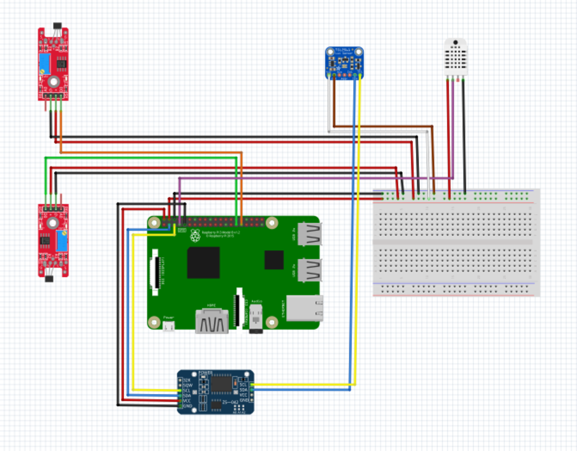
The lux sensor is inserted to its mount on the top of the radiation shield and a fine cover pane of glass is placed on top of it. We used a simple glue gun to fix the cover pane ensuring that the space between the pane and the plastic mount is covered fully with glue. Additionally, we cut some grooves in the cooled glue to ensure that water from rain and condensation can drain. We connected the remaining parts of the radiation shield with the top part holding the lux sensor. After that we attached the temperature/humidity sensor to the base of the radiation shield and finally connect the base with the remaining parts of the radiation shield.
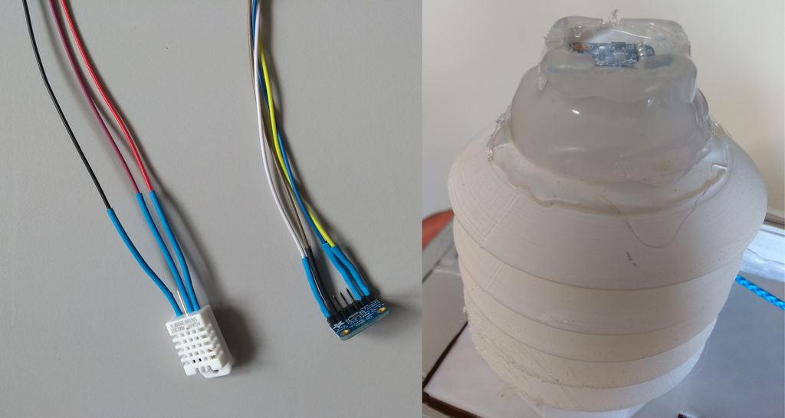
Attaching the camera
Raspberry Pi camera module v.1.2
30cm ribbon cable
3d printed camera mount
Cover glass pane 25x25mm
At first, we connected the ribbon cable to the camera module and then put it into the 3D-printed camera mount. We closed the cap on the backside of the mount and placed the cover pane on the front fixing it by using a glue gun. Here, we also made sure that the glue covers the whole area between the camera mount and the cover pane. Finally we cut some grooves in the cool glue just to ensure that rain and condensation water can drain.
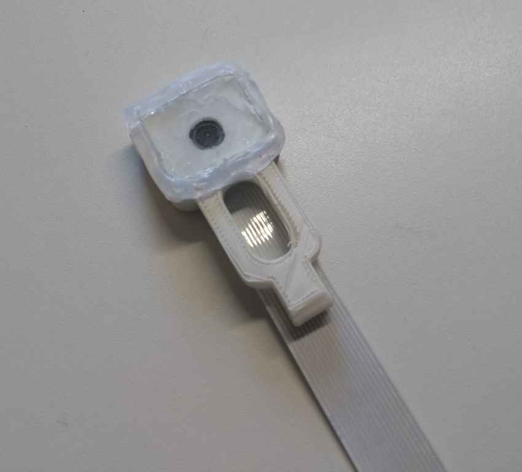
Placing the real-time-clock (RTC)
Real-time-clock
Jumper-cables
Pin-header with 2 pins
The real-time clock is placed in the rectangular free space on the 3D-printed mounting plate. Because of the final orientation of the clock with the battery heads up, we would not be able to connect the jumpers to the contacts. So we soldered a pin-header to the SCL and SDA contacts. This way we were able to connect the jumper cables as indicated in the fritzing scheme.
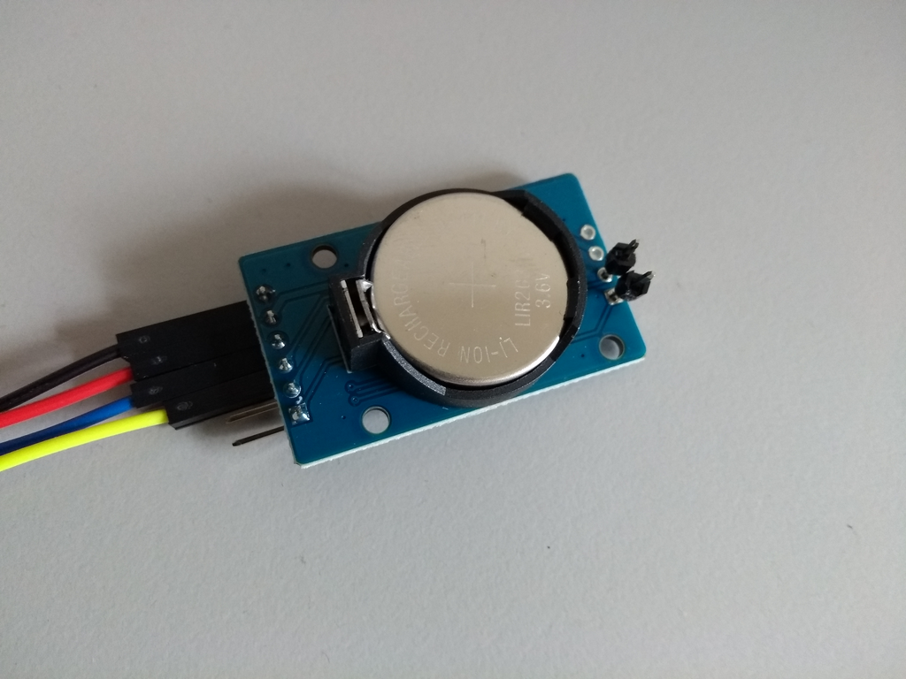
Attaching the hall sensors
2 hall sensors
Jumper cables
We connected the jumper cables as indicated by the fritzing scheme. Before fixing the hall sensor to the box, the sensitivity of the sensors needs to be adjusted. This is achieved by turning the adjusting-screw of the potentiometer approximately 15-times clock-wise until one can hear a slight click sound. Once the hall sensor is supplied with energy, we can use a magnet to test the functionality of the sensor: one of the lamps should start glowing when a magnetic field is within the sensor range. However, to save energy consumption we decided to disconnect these lamps from the energy supply by using the soldering machine. The hall sensors are then glued on the inside of right-hand side of the box right below right below the screws of the upper and lower rolls. For the software controlling the movement of the box to work correctly, it is very important that the hall sensors are oriented correctly inside the box. The one controlling the upper limit (green jumper in this case) is connected to GPIO21 while the one controlling the lower limit (orange jumper) is connected to GPIO22.
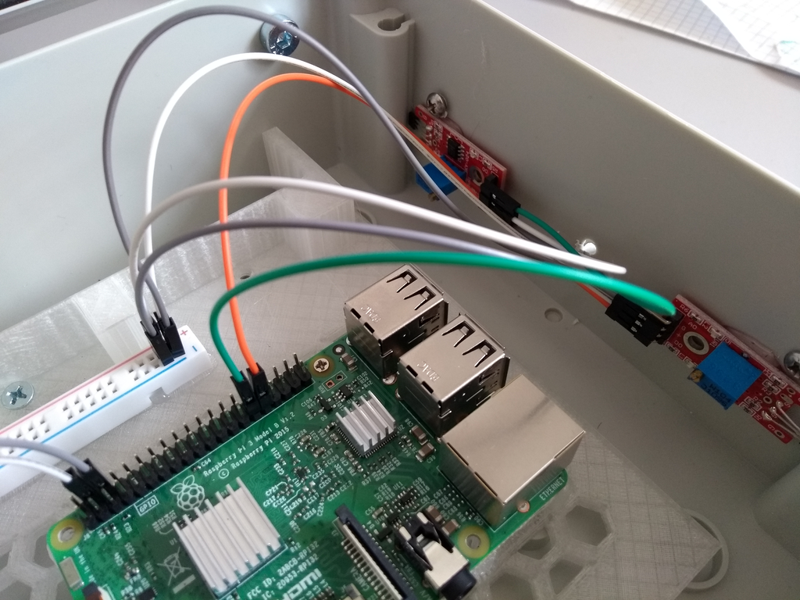
Attaching the microphones and final assembly of the sensor tower
Microphones
Sound cables
3d-printed sensor tower
We inserted both types of microphones into slightly different versions of the 3D-printed sensor tower and fixed them with glue. The more expensive microphone needs a additional connections to a soundcard before the sound cable can be connected to the audio entry on the Raspberry Pi. Next, we attached the previously prepared camera module to the sensor tower and made sure that the cable enters the box through the slit from the template and connected it to the microcontroller. Then the LMST is fixed to the rest of the sensor tower carefully making sure all jumper cables of the sensors are led inside the box. The LMST can be fixed to the rest of the sensor tower by gently turning them against each other to close the bayonet catch.Finally, all the cables in the inside are connected to the microcontroller as indicated in the fritzing scheme. We also made sure to tie loose jumper cables together and fixated them by using cable-tie sockets and some wire.
At the end, we made sure to seal all spaces between the sensor tower and the containment box either with silicon or glue. We also applied an additional layer of silicon to every other potential entry point of water or vapor like the the cable entries.
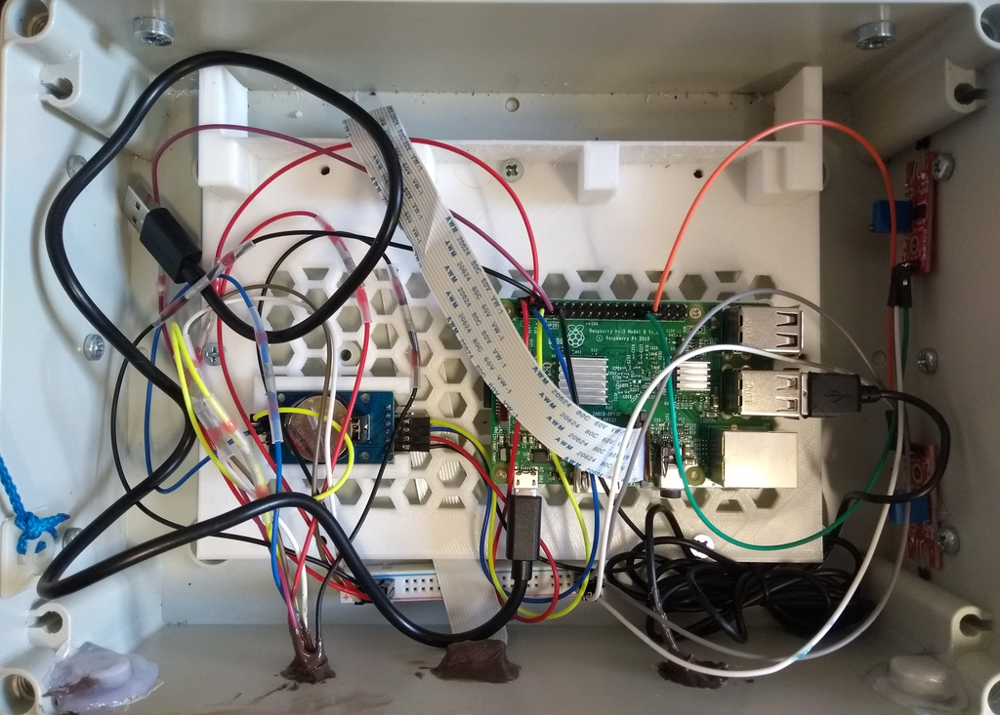
Software
This page contains a brief guide getting the Raspberry Pi up and running using the custom image developed by Jonas
Hoechst.
Requirements:
RaspberryPi
Micro-SD Card
A WIFI capable laptop or PC
(Micro-)SD card reader
Flashing the Micro-SD Card:
First we downloaded the operating system here and wrote it with the tool etcher to the Micro-SD card.
The Raspberry Pi can then be started from the Micro-SD card. After a few minutes of waiting the Raspberry Pi will start to send a Wifi signal.
The password natur40 is required to connect to the Wifi.
Remote connect to the Raspberry Pi:
Once your device is connected to the WiFi we can use ssh to start a remote shell connection.
Getting SSH ready
If you already have a working ssh environment you can skip this part.
Linux:
Most modern distributions of Linux already have ssh installed. If ssh is not installed you can find installation instructions here.
Windows:
There are two main ways to use ssh under Windows. The first is to download and install PUTTY. The second option is to install the linux subsystem from the windows store and then use ssh like on linux.
Connecting via ssh
In order to connect to the Raspberry Pi we need to find out it's IP-address.
Since the Raspberry Pi creates a hotspot the IP-address sould be the same for all downloaded copies of the image: 192.168.4.1
To be sure the following command returns the Ip-address:
Linux:
arp -a
Windows:
ipconfig | findstr /i "Gateway"
Will retun the local IP-address of your router and in our case of the Raspberry Pi.
Once we got the IP-address we can issue the ssh command (replace "192.168.4.1" with whatever IP-adrress you got):
ssh pi@192.168.4.1
After the connection is established the Raspberry Pi will ask for authentication. natur is the pi's user password.
The first thing we should do after a successful login is to log back out so we can calibrate the connected real-time clock (RTC)
To log back out simply type: exit. When we are no longer connected to the Pi we can execute the following command to copy the systemtime of our machine to the PI's RTC:
date | ssh pi@192.168.4.1 'sudo hwclock
--set --date "`cat`"; echo "hwclock set to: `sudo hwclock`"'
Controlling measurements:
In this build the measurement protocol is implemented as a systemd service.
Therefore, we can control the service using the systemctl command.
The measurement unit is called sensorproxy.
To check the current status of sensorproxy type:
sudo systemctl status sensorproxy
In order to start sensorproxy type:
sudo systemctl start sensorproxy
To stop sensorproxy type:
sudo systemctl stop sensorproxy
Stopping and starting can be done at the same time using the restart option:
sudo systemctl restart sensorproxy
With each start of the service a full measurement with all connected sensors will be carried out.
Given the case a sensor does not send its readings there is the option to check the systemlogs with:
sudo journalctl -u sensorproxy
The sensorproxy service is a build-in tool to check all connected sensors. To execute the system check type:
sensorproxy -t
To increase verbosity simply add between one or four "v" like this:
sensorproxy -tvv
Copying files:
The most convenient way to copy files from and to the Raspberry Pi is by using the scp command.
A simple example would be:
This command will copy the entire sourcefolder including every subdirectory in sourcefolder to the destination directory.
Notice: With the first command we copied a file from our local machine to the Raspberry Pi while the second command copied a directory from the Raspberry Pi to our local machine.
Data
In a simple test run of our sensorboxes we placed all of them next to each other overnight. In total, we placed six boxes. One box showed issues in saving the data to disk, so we could not include it's results in the analysis.
Another box did not collect temperature and humidity data, so we only have 4 boxes to compare the measurements for these two variables. The illuminance sensor worked for all boxes, but since we made our test run overnight, there are not
as many observations to compare.
Temperature
The following plot shows the measurement of four different sensorboxes for the variable air temperature. The specific measurements are indicated by dots, the blue line indicates the mean of all measurements at a specific time step
and the grey ribbon indicates the standard deviation from the mean value.
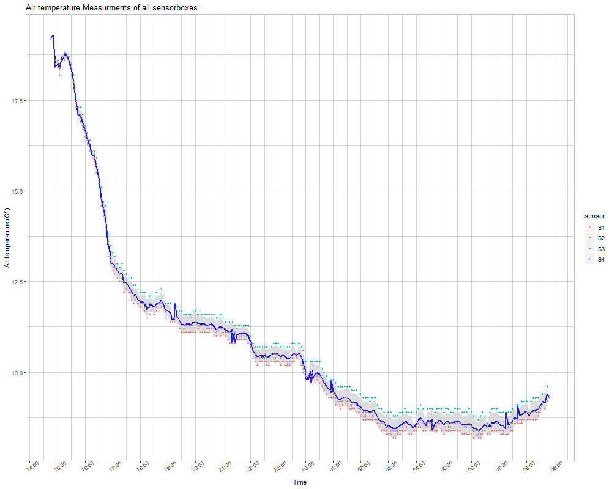
The sensors show a greater level of agreement at the beginning of the measurement sequence. After three hours and with temperatures below 14 °C the differences between the measured temperature increases. While S2 and S4 generally are
closer to the mean value, S3 measures constantly higher values while S1 measures lower values compared to the mean.
RMSE between temperature measurements
Sensors
S1
S2
S3
S4
S1
0
0.17
0.52
0.17
S2
0.17
0
0.36
0.06
S3
0.52
0.36
0
0.37
S4
0.17
0.06
0.37
0
This is also indicated by the RMSE comparison between the sensors. While S2 and S4 only show an RMSE of 0.06°C, S3 has an RMSE of about 0.36°C to S2 and S4 and even 0.52°C to S1. The RMSE between S1 and S2 and S4 is comparatively low
with only 0.17°C. This analysis shows that S3 most probably should be replaced if RMSE below 0.5°C is desired. Another option could be to calculate a calibration curve for the specific sensor since the correlation coefficients to the over
sensors are around 0.99, indicating that the measurement of temperature differences works properly. Only the assignment to specific temperature values does not work correctly which could be compensated for by applying a calibration
function.
An exemplary calibration of sensor S3 for the variable air temperature would look like this:
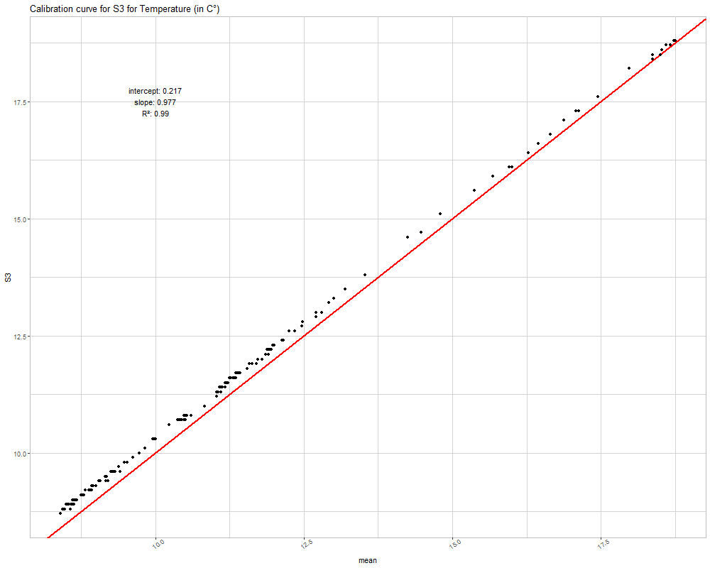
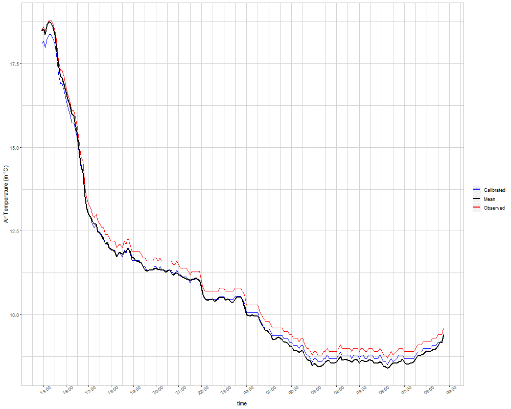
Humidity
The measurement of the relative air humidity shows a similar pattern of sensor differences like the temperature. The first three hours of the measurement, the level of agreement between the sensor is higher than after 5 pm. However,
compared to the temperature measurements, even within the first three hours the standard deviation of the mean is with approximately +-2.5% substantially larger than the standard deviation of the temperature. The standard deviation of the
measurements increases over time and reaches a level of +- 5%.
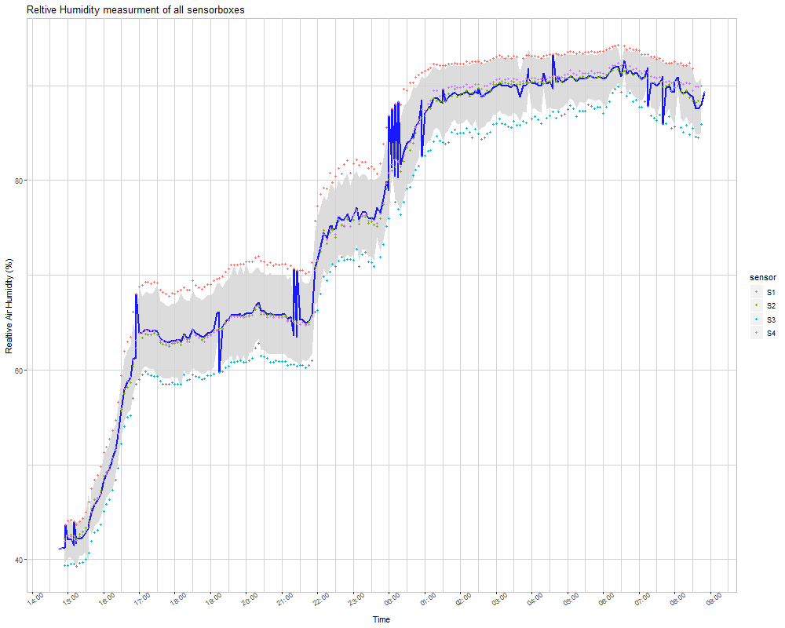
A similar pattern in the differences between the sensors compared to the temperature measurements can be observed. S2 and S4 measurements are very similar and close to the mean, even though towards the end of the measurement period
their differences increase. S1 constantly measures higher relative humidity values while S3 constantly measures lower relative humidity values. This pattern is opposed to the pattern in temperature which makes a case because with lower
temperatures and constant humidity the relative humidity increases.
RMSE between relative humidity measurements
Sensors
S1
S2
S3
S4
S1
0
4.52
8.55
4.27
S2
4.52
0
4.1
0.49
S3
8.55
4.1
0
4.41
S4
4.27
0.49
4.41
0
Again, while S2 and S4 only show a RMSE of about 0.5%, S1 and S3 show an RMSE of about 4.4% to S2 and S4 and about the double to each other (8.55%). Both, S1 and S3 either need a replacement or a sensor specific calibration curve
should be calculated.
Illuminance
Since we started our measurements in the afternoon and ended it around 9 am the next morning, most of the measurements of illuminance are equal or close to 0 lx. However, during the illuminated hours the sensors show a great level of
agreement though the standard deviation is higher in the morning hours compared to the evening. S1 and S3 however, seem to have produced some significant outliers. The data at hand though is not enough to evaluate this assumption. Another
measurement campaign during daylight would be needed to generate further insights of the differences between the sensors.
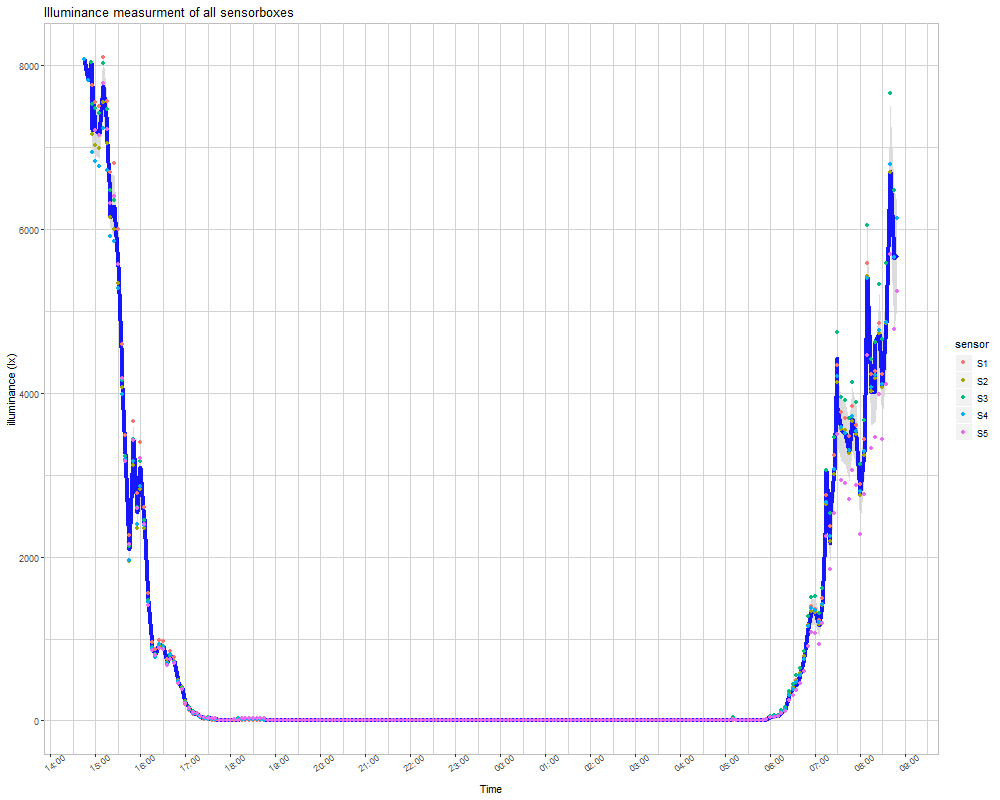
Audio Records
For a future automated bird species identification the sensorboxes were also equipped with microphones. They record 30 seconds of audio every 30 minutes when all the other data are collected as well. As an example you can listen
here to an audio record from 6 am.